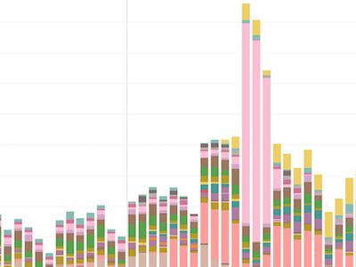
Tableau Desktop
Data Visualizations
I build and update Tableau visualizations for T-Mobile's e-commerce team. This involves seeking out internal data sources, identifying key performance indicators, authoring SQL scripts, and creating visualizations that enable the entire team to self-serve.
To accomplish this, I manage a kanban backlog, where I author data visualization user stories, triage product requests, and organize 2 week sprints.
Some notable accomplishments include: customer daily sales, revenue, and lifetime value dashboards
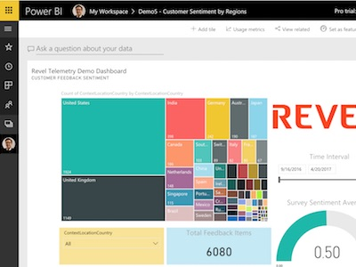
Microsoft Power BI
Data Visualizations
I built and updated Power BI visualizations for Microsoft Campus team, an internal knowledge management portal. This involved sourcing data from Azure SQL, sourcing events from Azure Application insights, authoring custom queries, and identifing key performance indicators for the Dev-Ops team in India.
Great outcomes for the client such as reduced monitoring time (3 hours to several minutes), and providing timely customer data insights to the product team.
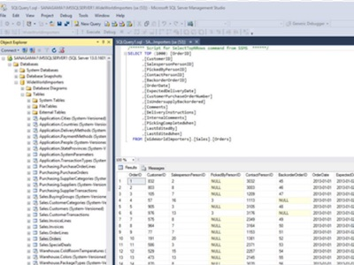
Data and SQL
Using data to better manage your business
At T-Mobile, I author well-documented wiki articles and SQL scripts to allow my client team to source data from SQL Server, and Teradata.
To reduce the time to getting data insights, and visualizations, I can author Python programs, source data from 3rd party APIs, inspect the JSON data, and land the data in a database.
I have hands on experience with the following digital marketing APIs: Google My Business, Adobe, Yext, and Marchex
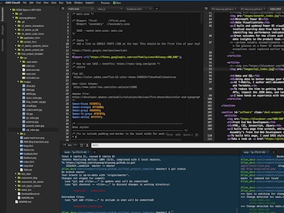
Front End Web Development
HTML, CSS, Javascript, JQuery
I built this page from scratch, while completing General Assembly's Front End Web Development course.
To build this page, I used SASS style sheets, JQuery, Javascript, Chrome debugger, and some fun JQuery plugins
Take a look at my Github repository to get a sense of my coding style.
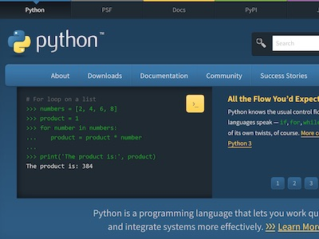
Python Programming
Flexible, Object Oriented
Python is a great language to get things done. It is easy to learn, and comes with a large user base, ample libraries, and plenty of online resources.
I am a fan of using Requests: HTTP for Humans library to programmatically obtain data from APIs, and Boto3 for working with Amazon Web Services SDK.
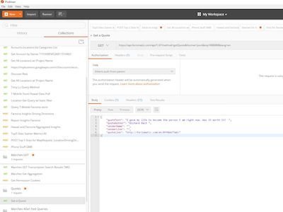
API, JSON, Postman
Getting to 3rd party data sets
At T-Mobile a frequently review API documentation, and sample JSON response before writing my sourcing program. Postman is a great tool I use to test and save responses before trying to do the same in a program.
I have written programs at T-Mobile to communicate with APIs from Marchex (speech), Google My Business, and Yext.
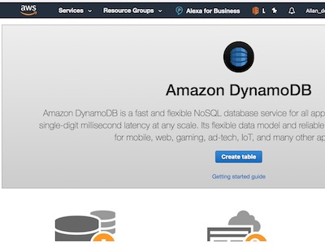
Amazon Web Services
Made for developers to build quickly and at scale
The free tier is a great opportunity for developers to learn and try. I use Amazon web services as it is cost effective, which allows me to make mistakes, learn, and start over
I use Cloud 9 for my front end web, and python development; DynamoDB to store JSON objects; and CodeCommit for my private code repositories.
I am learning Alexa Skill Kit, and Lambda while working on my AWS certifications.
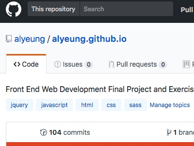
Source Control
GIT, AWS CodeCommit
I learned to work with Git using command line.
I have a Github public repository and AWS CodeCommit private repository.
At Microsoft, I checked in webjobs and code into Visual Studio Team Foundation Services source control with continuous integration
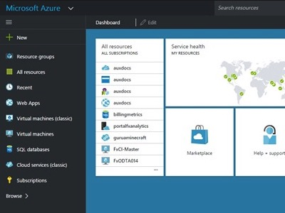
Microsoft Azure and Visual Studio
Microsoft Azure Stack
At Microsoft, I worked on an active directory security review.
With the Azure dashboard, I built dev-ops dashboards to make it easier for the Ops team to monitor our website. I paired this with Azure application insights to monitor custom events.
Agile Transformation T-Mobile
Delivering customer value
Every 2 weeks I deliver on a product feature request with a demo. Demos can cover data visualizations, documention, sql queries, and custom software development. This ensures alignment with the changing nature of the business at T-Mobile
Demos supported e-commerce web product and online promotions.
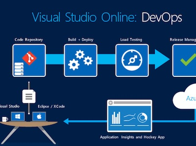
Microsoft Dev Ops
Team Lead
Authored operations guide to educate and scale up a dev ops team in india.
Build custom dashboards in Azure and Power BI to allow the team to quickly and efficiently monitor the Sharepoint page
Scrum master for stand-ups and demos. Managed continuous deployment to UAT and PROD using Visual Studio.
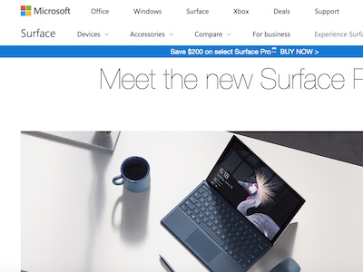
Microsoft Devices
Hardware and software experiences
Engineering hardware program manager at Microsoft devices team. Worked collaboratively with hardware engineers and software developers to source custom components, and development platforms to support Windows experiences.
Experienced with engineering request for proposals, supply chain review, and managing specifications and costs within the bill of materials
Led a team to custom design a battery, working with suppliers in Asia (China, Taiwan, Japan, and Korean).
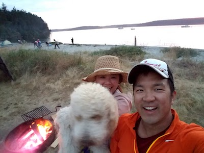
Family
Spending time with Family in the Pacific Northwest!
In my free time, I really enjoy just hanging out in the neighborhood with my wife Annie, my family, and our pet poodle Carson.
In the summers, we love to visit the San Juan Islands, state parks, and national parks.
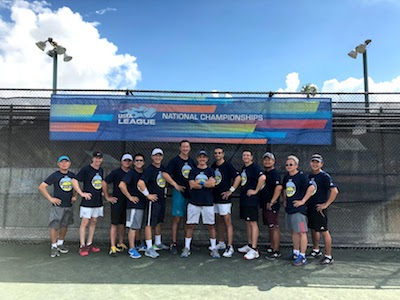
Tennis
Social + Recreation
I enjoy playing tennis as there is a mix of improvement, competition, exercise, and social.
By playing USTA tennis, you have a chance to meet people from all walks of life.
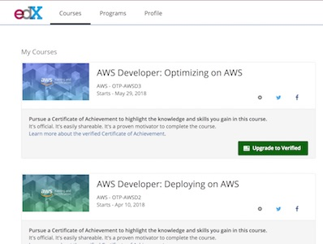
Learning
Continuous Improvement
I learn programming, data science, and Amazon technology using Edx.org, Udemy, and Lynda.com
For many topics, I turn to Google, Stack Overflow, and Youtube.
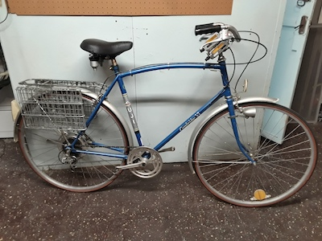
Cycling
Cycling rain or shine
Going around town by bike is my preferred method of getting to the office, running errands, and getting home.
I can avoid traffic, get some exercise, see changes in my neighborhood, and get the best parking spot!
Go to my bicycle page to learn more.